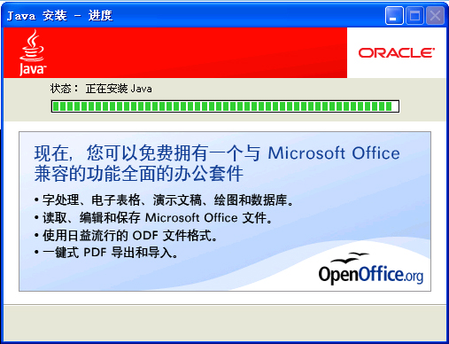
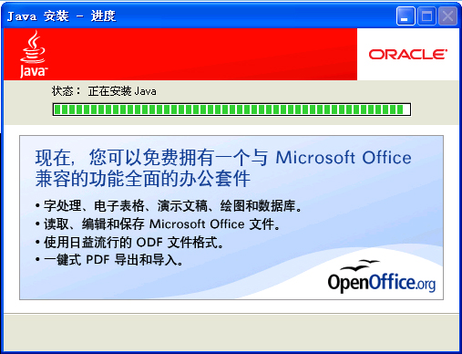

安装打印ActiveX控件指南
为了使您能够正常浏览打印相关报表，请您放心安装使用中国电力人才网上的ActiveX打印控件，如果您使用的是IE浏览器，系统会自动提示您安装。如果没有正确安装，将无法出现正确打印！
如何手动安装控件？
您也可以手动点击下载，下载后双击进行控件安装：
如何自动安装控件？
如果您使用的是windows xp系统(sp2)，IE浏览器会屏蔽上面的弹出窗口，这时候您只要按照下面的步骤安装就可以了：
第一步：点击"打印"时，IE窗口会出现下图所示的提示，此时点击"单击此处"
提醒：请不要关闭此提示框，否则，您就不能正常安装我们的插件了！第二步：选择"安装ActiveX控件"：提醒：选择并点击"安装ActiveX控件"，我们保证选择此控件对您的计算机没有任何风险！
第三步：弹出如下图所示安全警告窗口，选择"运行"
为什么我按上面的操作还是无法安装，或是安装后也无法正常使用？请检查您的电脑是否安装了3721或其他拦截广告的插件，如果是，请将其设置为不要拦截ActivX控件！
请检查您的IE设置，并按以下步骤修改您的IE设置:
第一步：打开IE浏览器，选择"工具"-〉"Internet选项"，出现如下窗口：第二步： 按一下"设置"按钮，出现如下画面，将"检查所存网页的较新版本"设置为"每次访问此页时检查（E）"，然后按"确定"按钮。第三步： 进入"安全"设置画面，按一下"自定义级别"按钮：第四步：将ActiveX控件和插件中相关参数设置成下图红线特别标注的一样即可。经过以上操作，您现在可以正常进行报表打印了！
您也可以手动点击下载，下载后双击进行控件安装：
如何自动安装控件？
如果您使用的是windows xp系统(sp2)，IE浏览器会屏蔽上面的弹出窗口，这时候您只要按照下面的步骤安装就可以了：
第一步：点击"打印"时，IE窗口会出现下图所示的提示，此时点击"单击此处"
提醒：请不要关闭此提示框，否则，您就不能正常安装我们的插件了！第二步：选择"安装ActiveX控件"：提醒：选择并点击"安装ActiveX控件"，我们保证选择此控件对您的计算机没有任何风险！
第三步：弹出如下图所示安全警告窗口，选择"运行"
为什么我按上面的操作还是无法安装，或是安装后也无法正常使用？请检查您的电脑是否安装了3721或其他拦截广告的插件，如果是，请将其设置为不要拦截ActivX控件！
请检查您的IE设置，并按以下步骤修改您的IE设置:
第一步：打开IE浏览器，选择"工具"-〉"Internet选项"，出现如下窗口：第二步： 按一下"设置"按钮，出现如下画面，将"检查所存网页的较新版本"设置为"每次访问此页时检查（E）"，然后按"确定"按钮。第三步： 进入"安全"设置画面，按一下"自定义级别"按钮：第四步：将ActiveX控件和插件中相关参数设置成下图红线特别标注的一样即可。经过以上操作，您现在可以正常进行报表打印了！